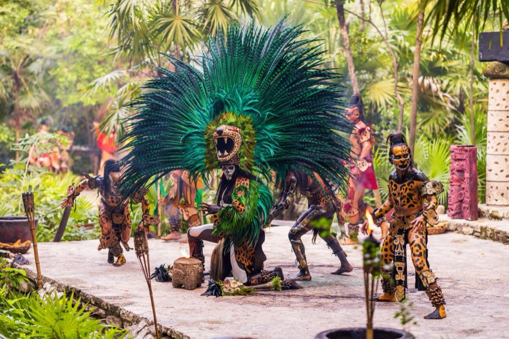
Xcaret
Xcaret Básico
Acceso completo al parque insignia de la Riviera Maya: ríos subterráneos, snorkel y show nocturno.
- Acceso completo al parque
- Ríos subterráneos
- Show nocturno
Reserva tus boletos para Xcaret, Xel-Há, Xplor, Xenotes, Xichén Itzá, Xenses, Xoximilco y experiencias combinadas. Te ayudamos a elegir y armar el plan ideal.
En WalkMe reservamos por ti los boletos para todos los parques del Grupo Xcaret desde Playa del Carmen, al mismo precio que la página oficial y con atención personalizada por WhatsApp.
Parques · Experiencias · Combos
Cada parque tiene su propia esencia. Pregúntanos por combos, horarios de salida y transportación desde tu hotel.

Acceso completo al parque insignia de la Riviera Maya: ríos subterráneos, snorkel y show nocturno.
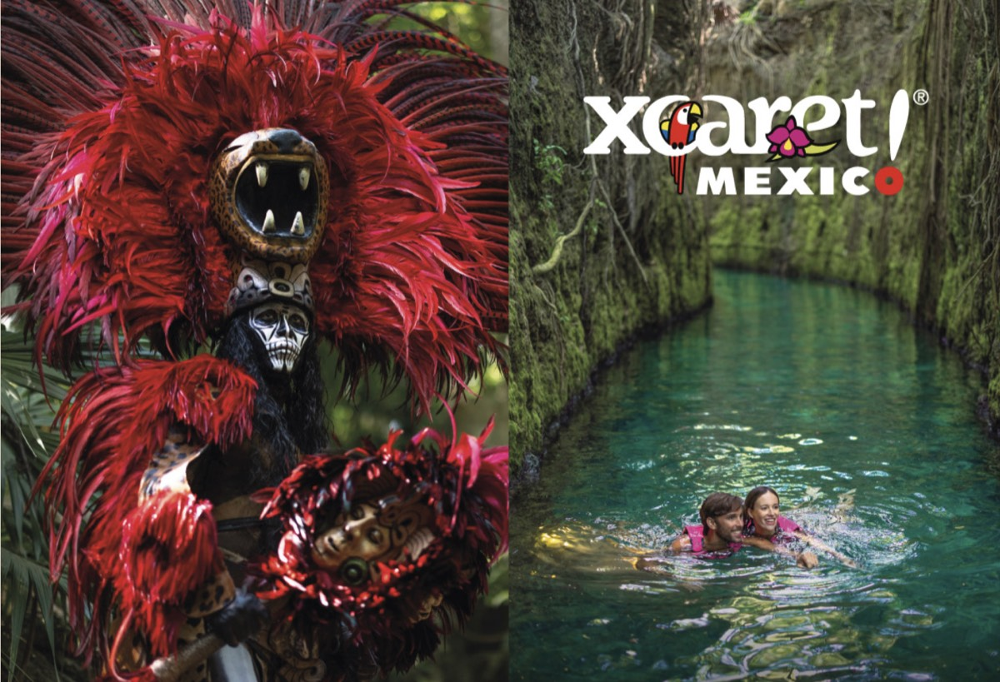
El parque Xcaret con brazalete Plus: buffet, área exclusiva y equipo de snorkel incluido.
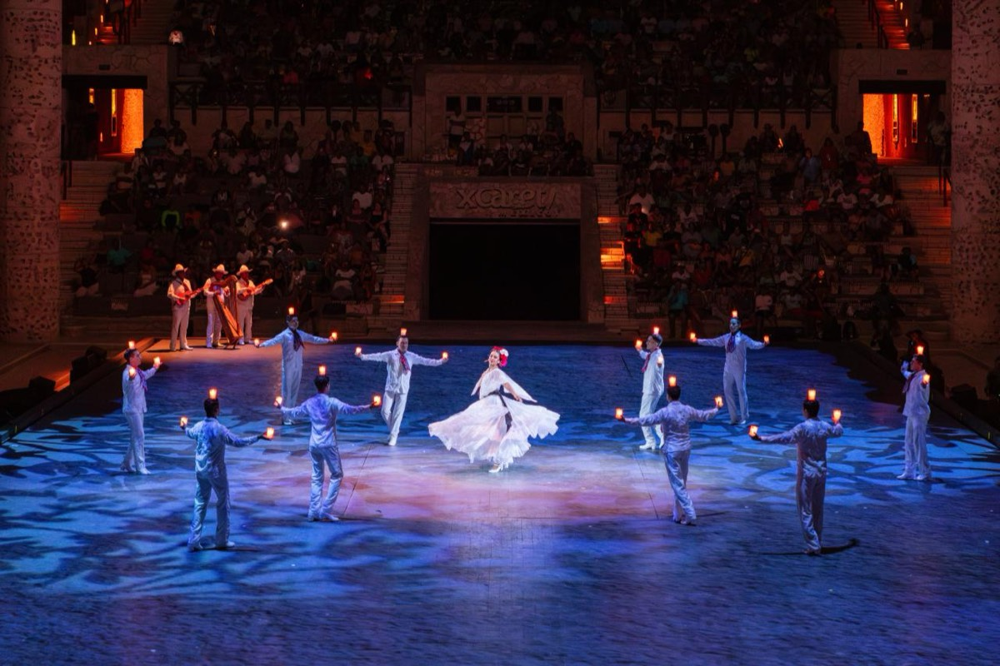
Solo el show México Espectacular, con más de 300 artistas; ingreso desde las 4:00 PM.
Parque acuático todo incluido en una caleta natural, ideal para snorkel y relax.
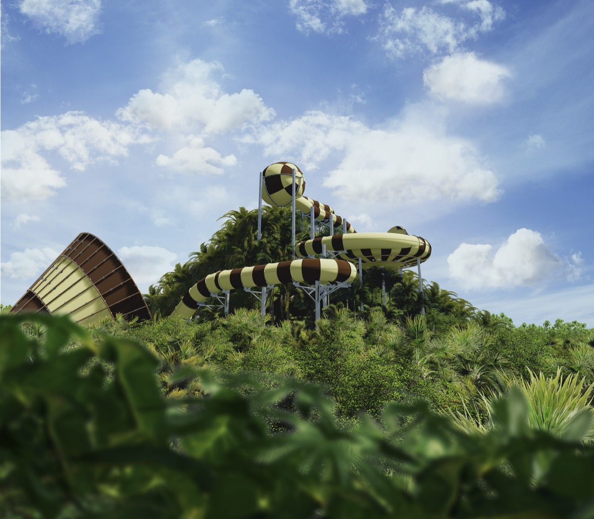
El parque de aventura junto a Xcaret: tirolesas, anfibios y ríos subterráneos.
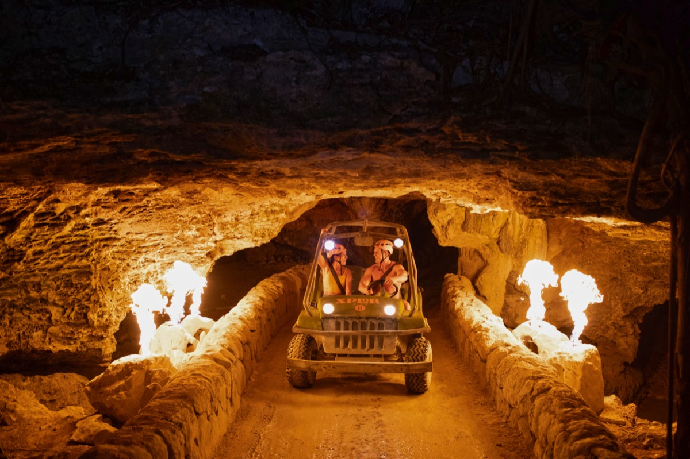
La versión nocturna de Xplor: tirolesas iluminadas y cena bajo las estrellas.
Experiencia de sensaciones e ilusiones ópticas, perfecta para medio día.
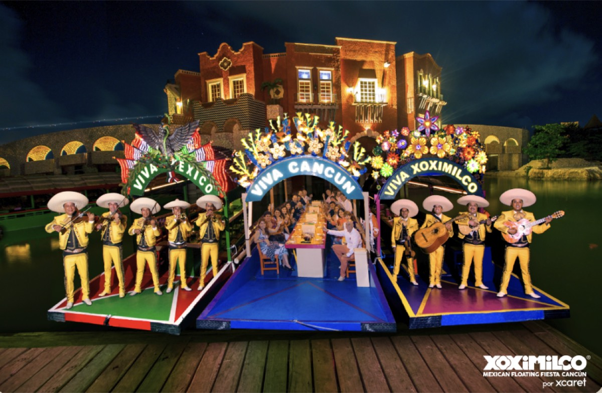
Fiesta mexicana nocturna en trajineras, con cena, mariachi y música en vivo.
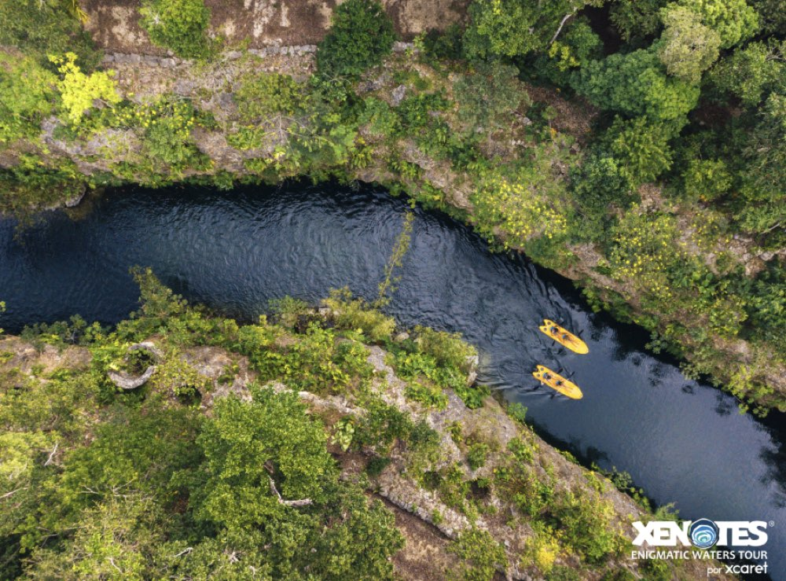
Nada, haz rappel y tirolesa en cuatro cenotes distintos de la Riviera Maya.
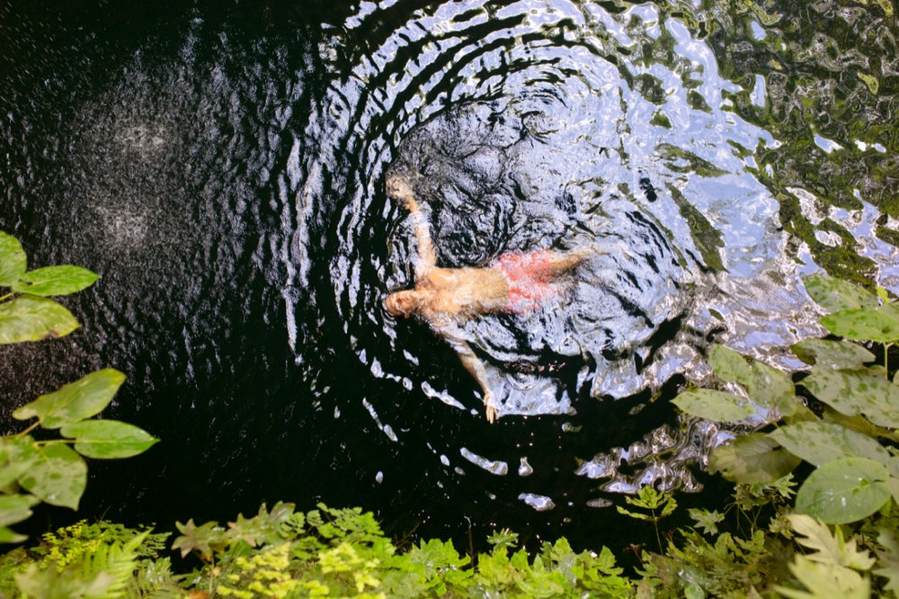
Chichén Itzá con guía, cenote sagrado y barra libre, en versión deluxe.
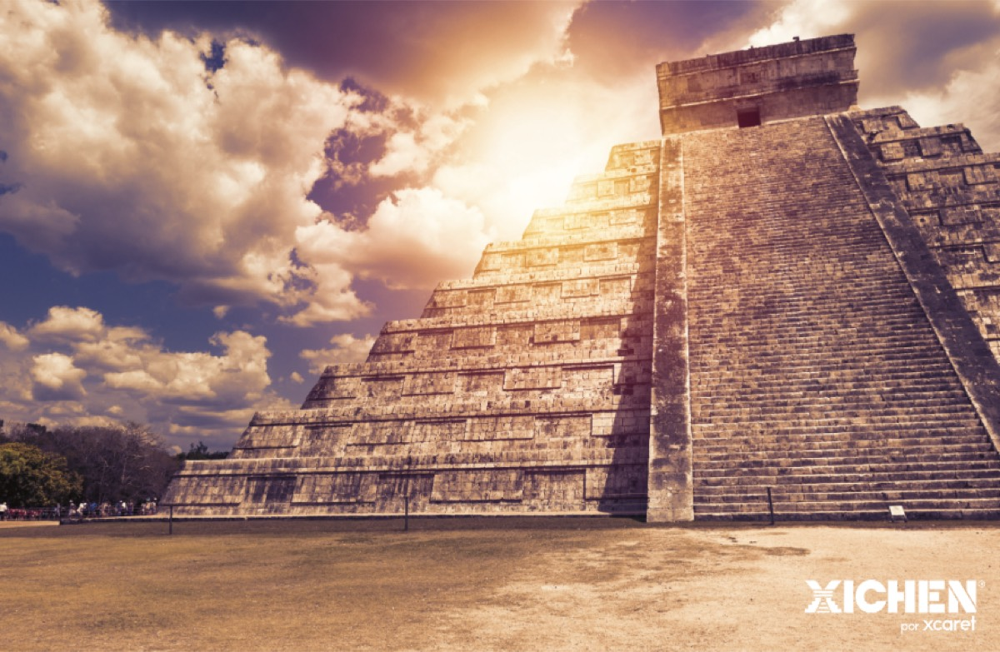
Chichén Itzá, cenote y Valladolid con recorrido guiado y buffet incluido.
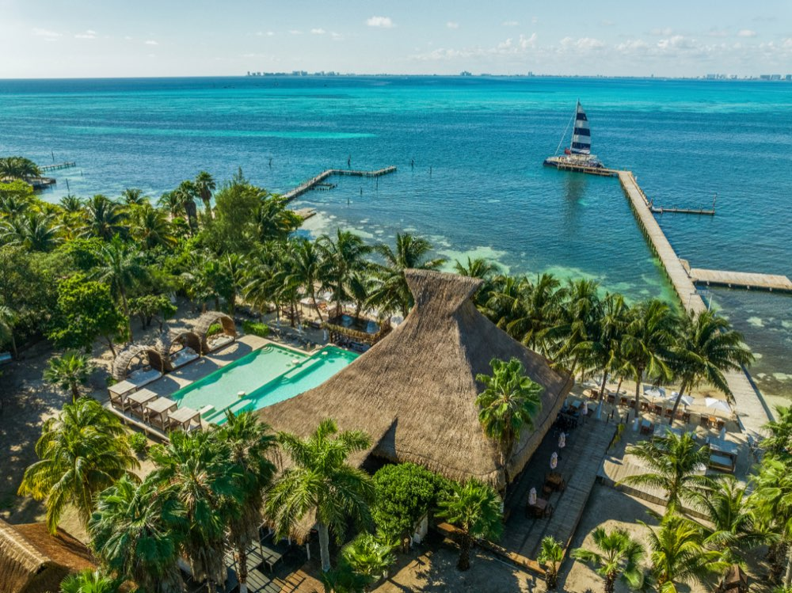
Catamarán premium a Isla Mujeres con open bar, almuerzo y snorkel en arrecife.
Navega el Caribe a Isla Mujeres con snorkel y tiempo libre en la isla.
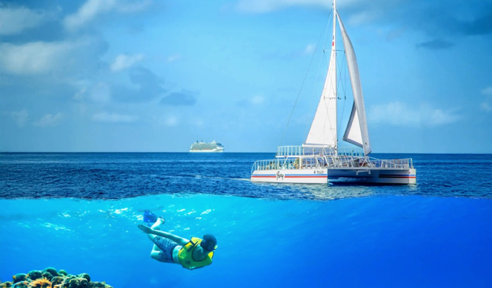
Snorkel en el arrecife de Cozumel, con tiempo de playa y bebidas a bordo.
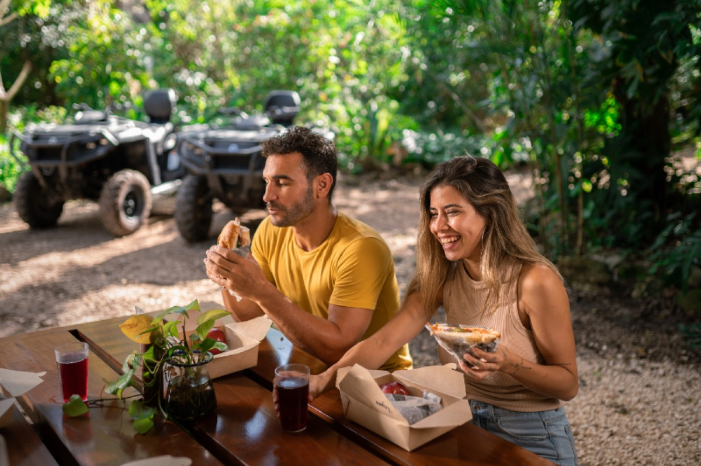
Cuatrimoto doble off-road por la selva maya, ideal para parejas y amigos.
Cuatrimoto individual off-road por la selva maya y caminos de tierra.
Arma tu paquete · 20% de descuento
Elige 2 o más experiencias de Grupo Xcaret y el 20% de descuento se aplica solo. Todas con transporte incluido desde tu zona.
¿No sabes cuál elegir?
Cuéntanos cuántos días tienes, con quién viajas y qué te gusta. Te recomendamos el mejor plan al mejor precio.
Pedir combo por WhatsAppPreguntas frecuentes
Somos aliados oficiales de Grupo Xcaret y trabajamos con ellos con mucho gusto. Te damos el mismo precio que la página oficial, más un trato personalizado que es difícil de conseguir en una empresa tan grande. Normalmente pagas por un link de pago seguro, simple y completo; si prefieres más confianza, también podemos visitarte en tu hotel para entregarte tus boletos y cobrar en persona, aunque no es algo que hacemos siempre. Además te damos asesoría para armar tu plan, tips para disfrutar mejor, y estamos al pendiente de que tomes tu transporte si lo compraste con nosotras.
Xcaret está en la Riviera Maya, muy cerca de Playa del Carmen: solo unos 15 minutos en auto.
¡Sí, y es muy seguro! Hay una ciclopista que llega hasta Xcaret, construida por el propio parque, así que además de segura es una forma muy divertida de llegar. Lo recomendamos mucho.
Sí, cuando el pago es en efectivo. El pago con tarjeta solo lo podemos cobrar en pesos mexicanos.
Hay mucho fraude en internet, así que vale la pena investigar bien antes de pagarle a cualquier agencia. Nosotras ofrecemos plataformas seguras como PayPal y Mercado Pago, donde si no recibes lo que te ofrecimos puedes reclamar y cancelar el pago.
En gustos se rompen géneros: hay parques para vivir una aventura y otros para entrar en contacto con la naturaleza. Xcaret destaca por su mezcla de naturaleza, cultura y sorpresas. Si buscas emociones, Xplor o Xplor Fuego te van a encantar; Xenses es perfecto para vivir experiencias nuevas, y Xel-Há es ideal para un día entero todo incluido en la Riviera Maya.
Xcaret y Xel-Há son los más completos para familias: tienen ríos, snorkel tranquilo, toboganes y actividades para todas las edades. Escríbenos por WhatsApp y te ayudamos a elegir según la edad de tus hijos.
Sí, es el mejor show de la Riviera Maya. No deberías perdértelo.
No. Xcaret tiene estándares muy altos, con programas de reproducción de especies en peligro de extinción y proyectos junto con biólogos, entre muchas otras iniciativas.
Al 100%, sí. Es como ir a París y no ver la Torre Eiffel, o ir a Orlando y no visitar Disney.
WalkMe · Agencia oficial autorizada del Grupo Xcaret en la 5ta Avenida, Playa del Carmen.
Última actualización: julio de 2026.
Parque · Naturaleza y cultura
Xcaret es el parque insignia de la Riviera Maya: naturaleza, cultura mexicana y aventura en un mismo día. El brazalete Plus agrega comida buffet, área exclusiva y equipo de snorkel incluido.
El brazalete Plus incluye comida buffet, un área exclusiva con vista, lockers y el equipo de snorkel. El acceso básico te deja disfrutar todas las atracciones, pero sin esos extras.
Lo ideal es un día completo. Abre a las 8:30 de la mañana y el show nocturno termina cerca de las 22:30, así que conviene llegar temprano.
Sí, es de los parques más completos para familias: ríos tranquilos, snorkel suave y actividades para todas las edades.
Parque acuático · Todo incluido
Xel-Há es una caleta natural donde el río se encuentra con el mar. Un día completo con comida y bebidas ilimitadas, ideal para nadar, hacer snorkel y relajarte en familia.
Comida y bebidas nacionales ilimitadas durante todo el día, además de snorkel, río flotante, tirolesas, bici y camastros.
No es obligatorio. La caleta tiene zonas tranquilas y chalecos salvavidas para todos, así que puedes disfrutar con seguridad.
Parque · Aventura
Xplor es aventura pura bajo y sobre la selva: las tirolesas más altas de la región, vehículos anfibios y ríos subterráneos entre estalactitas. Incluye comida y bebidas.
5 años. Los menores participan en las actividades según su estatura y siempre acompañados de un adulto.
Sí, buffet y bebidas ilimitadas durante todo el día están incluidos en tu acceso.
Parque · Aventura nocturna
Xplor Fuego es la versión nocturna de Xplor: las mismas tirolesas y anfibios, pero iluminados y rodeados de antorchas. Aventura al caer la noche, con cena incluida.
Son el mismo parque en horarios distintos. Xplor es de día; Xplor Fuego es por la tarde y noche, con las atracciones iluminadas y cena en lugar de comida.
Parque · Sentidos
Xenses es un parque de ilusiones y sensaciones: un pueblo al revés, ríos de lodo y de agua salada, y escenarios que juegan con tus sentidos. Perfecto para medio día diferente.
No, está pensado para medio día. Muchos lo combinan con otro parque o con la playa por la tarde.
Sí, es muy divertido en familia. Algunas sensaciones son intensas, pero la mayoría de las actividades son suaves y aptas para niños.
Experiencia · Fiesta mexicana
Xoximilco es una auténtica fiesta mexicana a bordo de trajineras iluminadas. Cena, música en vivo y mucho ambiente para celebrar como se hace en México.
No, pueden ir familias. Como hay barra con bebidas alcohólicas para adultos, el ambiente es festivo, pero los niños también disfrutan la música y la cena.
Sí. La cena de varios tiempos y las bebidas (tequila, cerveza, refresco y agua) están incluidas en tu acceso.
Tour · Cenotes
Tour Xenotes te lleva a cuatro cenotes distintos, inspirados en los cuatro elementos, para nadar, hacer kayak, rappel y tirolesa entre la naturaleza maya.
6 años. Es una actividad de aventura suave, con guía y equipo de seguridad para todos.
No es indispensable. Todos usan chaleco salvavidas y el guía acompaña en cada cenote.
Tour · Chichén Itzá
Visita Chichén Itzá, una de las maravillas del mundo, con guía certificado. La versión Deluxe agrega nado en cenote, buffet, barra libre y una parada en Valladolid.
El Deluxe incluye barra libre, buffet más completo y una experiencia más cuidada. El Clásico cubre lo esencial: Chichén Itzá, cenote y comida.
Sale temprano por la mañana para aprovechar el día y evitar el calor fuerte del mediodía en la zona arqueológica. Te confirmamos la hora exacta por WhatsApp.
Catamarán · Isla Mujeres
Navega el Caribe rumbo a Isla Mujeres en catamarán. La versión Prime suma barra libre premium, almuerzo y snorkel en arrecife, con tiempo para disfrutar la isla.
Prime es la versión premium, con barra libre más completa y servicio a bordo. Light es una opción más sencilla para navegar y hacer snorkel.
Coordinamos tu salida según tu zona. Escríbenos y te confirmamos el punto y la hora de encuentro.
Catamarán · Cozumel
El catamarán Fury te lleva a snorkelear en el arrecife de Cozumel, con tiempo de playa y bebidas a bordo. Un día de mar en uno de los mejores arrecifes del Caribe.
No. El catamarán Fury opera desde Cozumel, así que el ferry desde Playa del Carmen se compra aparte. Con gusto te ayudamos a coordinarlo.
Parque · Naturaleza y cultura
Acceso completo al parque Xcaret: ríos subterráneos, naturaleza, cultura mexicana y el show nocturno. La versión básica te deja disfrutar todas las atracciones a tu ritmo.
El Básico da acceso a todas las atracciones. El Plus agrega comida buffet, un área exclusiva, lockers y el equipo de snorkel.
Sí, conviene. Abre a las 8:30 de la mañana y el show nocturno termina cerca de las 22:30.
Parque · Espectáculo nocturno
Entrada por la tarde para vivir la noche de Xcaret: el gran show México Espectacular, con más de 300 artistas en escena, mariachi y danzas folclóricas.
Sí, es de los mejores espectáculos de la Riviera Maya. Si tienes poco tiempo, es una gran opción.
El ingreso es desde las 4:00 PM, para recorrer un poco el parque antes del show nocturno.
Tour · Chichén Itzá
Visita Chichén Itzá, maravilla del mundo, con recorrido guiado, nado en cenote, comida buffet y una parada en el pueblo mágico de Valladolid.
El Clásico cubre lo esencial: Chichén Itzá, cenote y comida. El Deluxe agrega barra libre y un buffet más completo.
Sale temprano por la mañana para aprovechar el día y evitar el calor fuerte del mediodía. Te confirmamos la hora exacta por WhatsApp.
Catamarán · Isla Mujeres
Navega el Caribe rumbo a Isla Mujeres en catamarán. La versión Light es la opción más sencilla para disfrutar el mar, hacer snorkel y pasar tiempo en la isla.
El Prime es la versión premium, con barra libre más completa y almuerzo. El Light es más sencillo, ideal si buscas un plan relajado.
Coordinamos tu salida según tu zona. Escríbenos y te confirmamos el punto y la hora de encuentro.
Aventura · Cuatrimoto
Recorre la selva maya en cuatrimoto doble (para dos personas), por caminos de tierra y naturaleza, con recorrido off-road guiado. Ideal para parejas y amigos.
La cuatrimoto doble la conduce un adulto y el acompañante va detrás. Escríbenos y te confirmamos edades y condiciones.
Aventura · Cuatrimoto
Maneja tu propia cuatrimoto individual por la selva maya, en un recorrido off-road guiado entre caminos de tierra y naturaleza.
No. El guía te explica todo antes de salir y el recorrido va a un ritmo seguro.